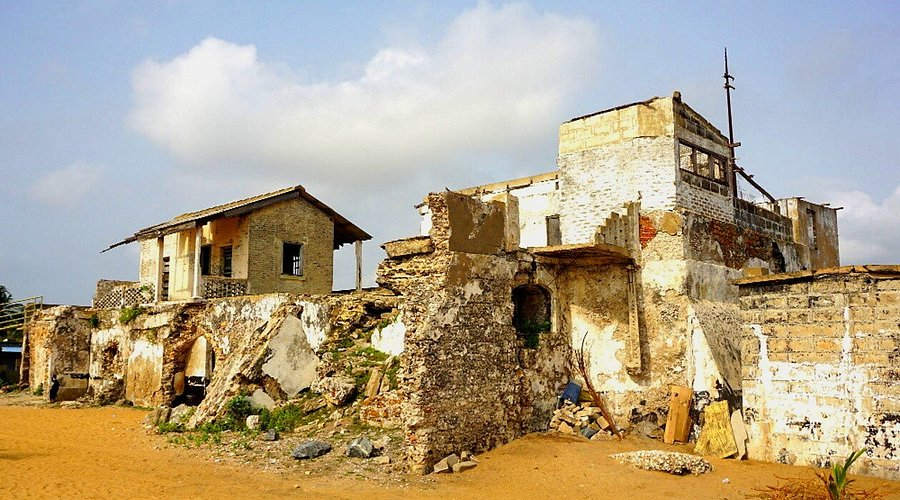
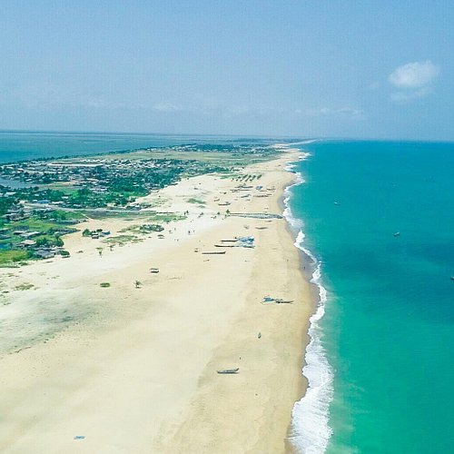
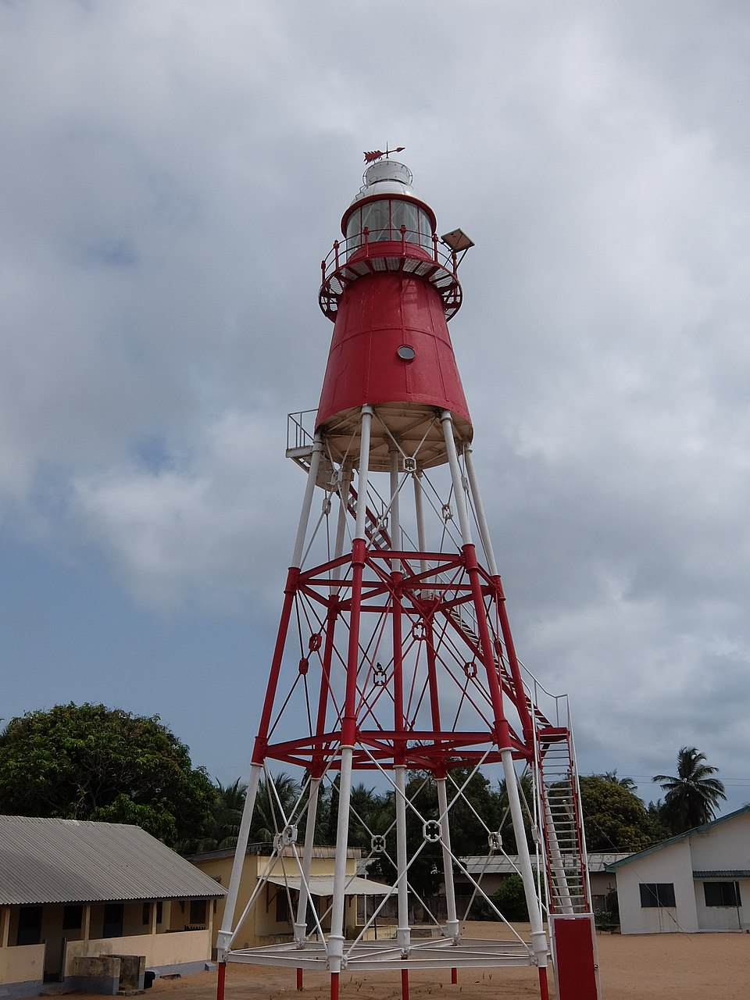
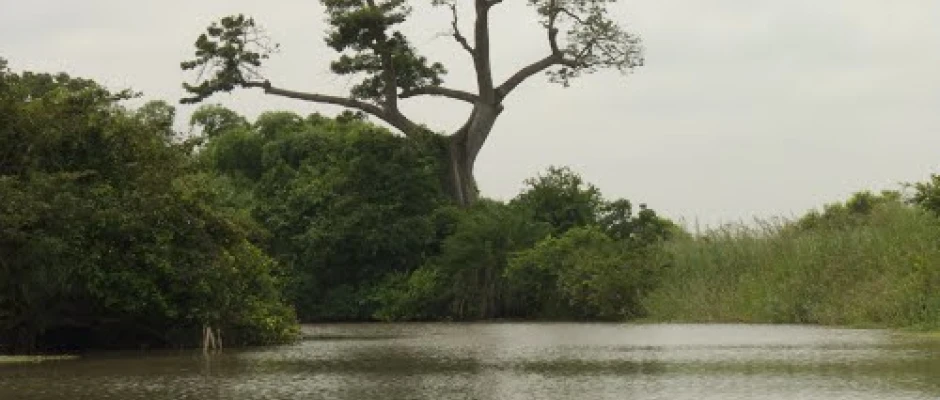
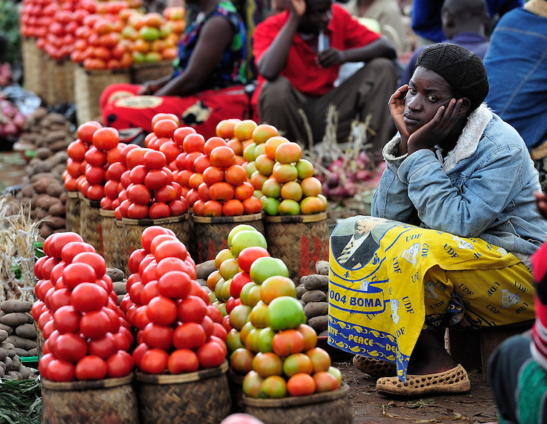

Explore Our Attractions

Keta Lagoon
Ghana’s largest lagoon and a haven for bird lovers.

Fort Prinzenstein
Step into centuries of history at this 18th-century fort built by the Danes.

Keta Beach
Soft sands, fresh breeze, and endless views — perfect for relaxation and photography.

Woe Lighthouse
Climb for panoramic views of the coast and sea.

Avu Lagoon
Explore lush mangroves and local wildlife guided by friendly communities.

Anloga Market
Experience the colors, sounds, and taste of authentic Ewe culture.